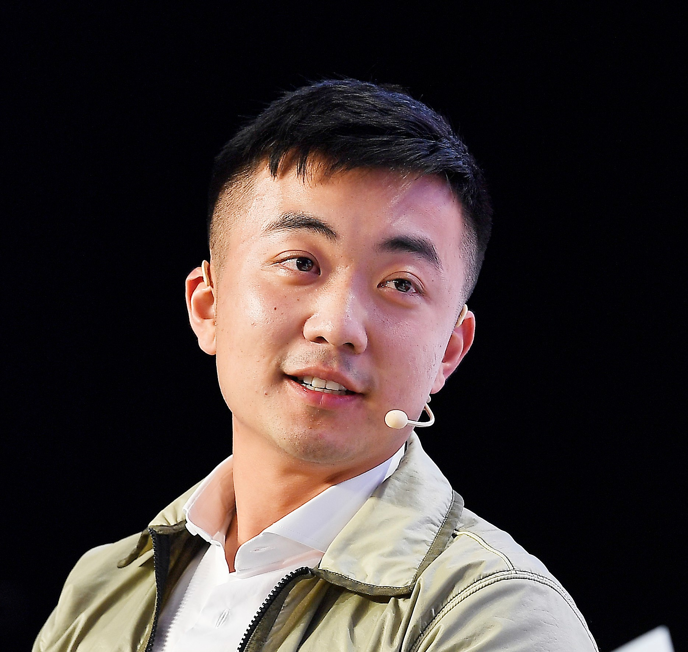

CODENCE by NEXORA is a modern technology learning ecosystem focused on production-grade software engineering, AI systems and real-world development workflows.
CODENCE by NEXORA is designed for learners who want practical, industry-oriented engineering education instead of fragmented theory-heavy systems.
We focus on helping developers build scalable thinking, production workflows and real technical depth through structured roadmap-based learning.
Our ecosystem combines modern UI systems, engineering-first education and community-driven growth into a premium learning experience.
We aim to bridge the gap between academic learning and real-world engineering standards by building a scalable ecosystem focused on practical development, systems thinking and future technologies.
Clear progression-based learning systems.
Build real applications and workflows.
Focused on modern engineering standards.
Distraction-free premium experience.
Scalability, architecture and logic-focused learning.
Collaborative ecosystem for builders.

Founded NEXORA with a vision to build modern engineering-first digital learning ecosystems focused on technology, scalable systems and premium educational infrastructure.
Leads long-term platform innovation, future product direction and design philosophy across CODENCE by NEXORA.
Focused on combining minimal product systems, modern UI architecture and industry-relevant learning experiences into scalable educational platforms.
Product vision, innovation leadership and ecosystem strategy.
Operational systems, execution workflows and platform coordination.
Infrastructure engineering, scalability and technical systems.
Engineering roadmap planning and technical learning systems.
UI systems, visual identity and premium platform experiences.
Developer ecosystem growth and community engagement systems.
AI programs, research workflows and future-focused curriculum.
Built for learners who want to think deeper, build better and engineer modern digital systems.